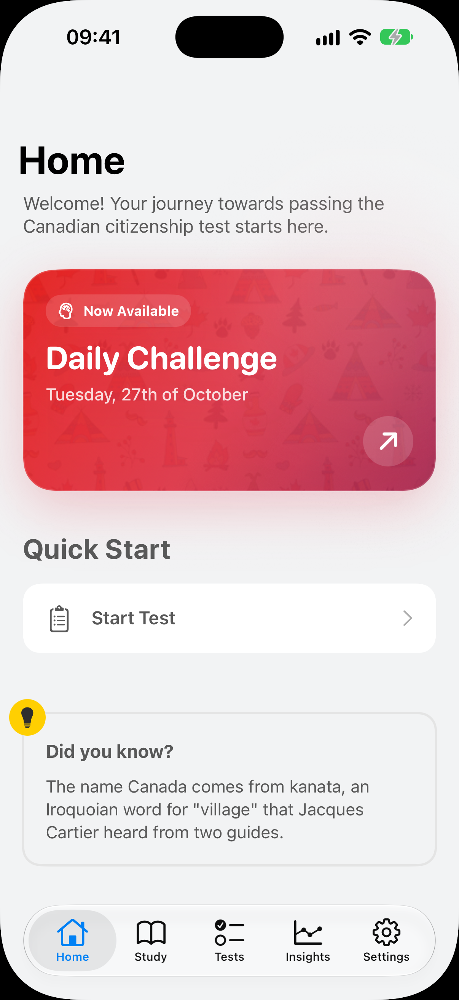
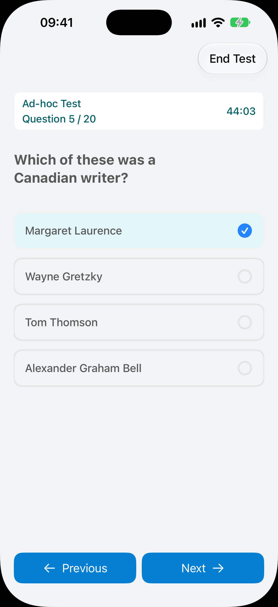
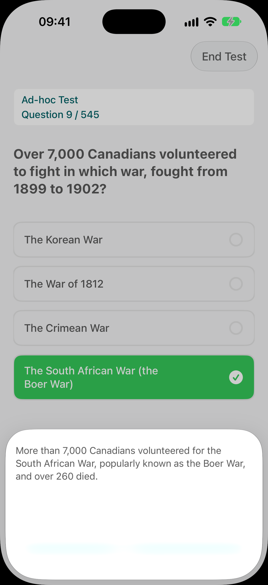
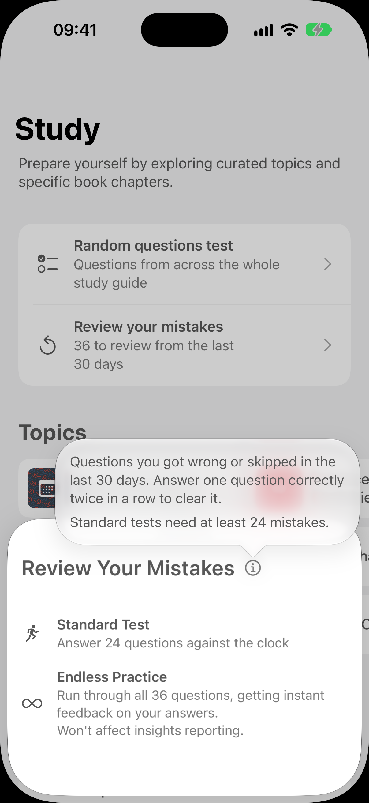
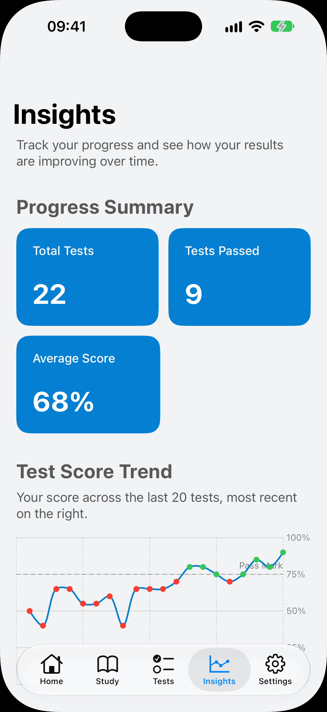

450+ practice questions
Exam-style questions covering every part of the testable section of Our Common Bond, from Australia and its people to government, the law and Australian values.
Over 450 practice questions, mock tests that match the real test and clear explanations, all built from Our Common Bond, the official resource book. The smarter, no-nonsense way to prepare for Australian citizenship.

Focused tools that cover the whole testable section of the resource book, without ads, accounts or distractions.
Exam-style questions covering every part of the testable section of Our Common Bond, from Australia and its people to government, the law and Australian values.
20 questions, including 5 on Australian values, against a 45-minute clock. Scored with the real pass rule: at least 75% and every values question right.
Drill one area at a time: Australian values, flags and symbols, states and territories, parliament and government, First Australians and more.
See straight away whether you were right, with a clear explanation so the answer actually sticks.
A short daily practice challenge helps you build a consistent study habit, a few minutes at a time.
See your scores by topic and over time, so you can focus your revision where it matters and know when you are ready.
Clean and simple, so studying never feels like a chore.

Mock tests mirror the official format, so nothing on the day comes as a surprise.

Every question comes with instant feedback and a short explanation based on Our Common Bond.

Focus on one area at a time, with extra practice on the Australian values questions you must get right to pass.

Track your progress across every topic and build a steady habit with a short daily challenge.
Questions are organised around the four testable parts of Australian Citizenship: Our Common Bond.
First Australians, history, states and territories, and national symbols.
Parliamentary democracy, the rule of law, freedoms and the responsibilities of citizenship.
The Constitution, Parliament, the three levels of government, courts and the law.
Respect, equality, freedom and a fair go. You must get every values question right to pass.
A simple routine of a few minutes a day is all it takes.
No account or sign-up needed. Open the app and start practising straight away.
Work through each part of Our Common Bond and read the explanations for anything you get wrong.
Sit full timed tests until you pass comfortably every time, with every values question right.
When your test appointment comes, go in confident that you know the material.
Download for free and start practising today. Unlock premium features with a single in-app purchase, with no subscription.
Nothing between you and your studying. Just focused, effective preparation.
No account, email address or personal details needed. Just open the app and start.
Study anywhere, on your commute or travelling, even without an internet connection.
The citizenship test is part of applying for Australian citizenship by conferral. It has 20 multiple-choice questions, 5 of them about Australian values, and you have 45 minutes. To pass you need at least 75% overall and every Australian values question right.
Questions are based on the testable section of the official resource book, Australian Citizenship: Our Common Bond.
Even with a high overall score, getting a single Australian values question wrong means you fail the test. That is why every mock test in the app includes 5 values questions, and why there is a dedicated topic drill for them.
No one can legitimately offer the actual test questions. The app contains over 450 exam-style questions, written for the app from facts in Our Common Bond and covering every part of its testable section, so you will be familiar with the kind of questions you will see on the day.
Yes. The question bank was written in 2026 from the current edition of Our Common Bond, and every answer is checked against the resource book.
The app is free to download and start practising. Premium features can be unlocked with a single in-app purchase. There is no subscription and there are no ads.
Yes. Everything works without an internet connection, so you can study on the train, on a flight or anywhere with poor reception.
The app runs on iPhone (iOS 17 or later) and iPad (iPadOS 17 or later). There is currently no Android version.
No. Australia Citizenship Prep is an independent study app and is not affiliated with or endorsed by the Australian Government or the Department of Home Affairs. Questions are written for the app from Australian Citizenship: Our Common Bond, © Commonwealth of Australia, licensed under CC BY 4.0. Official information about the test is on immi.homeaffairs.gov.au.
Start practising today with Australia Citizenship Prep, free on iPhone and iPad.